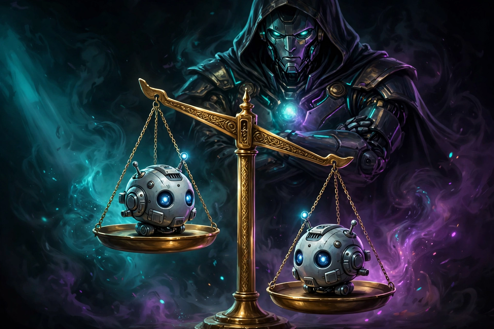

Ngày 11 bạn đã học cách lập ngân sách trước khi train. Hôm nay học cách đo sau khi train: mô hình của bạn thật sự giỏi, hay chỉ "có cảm giác" giỏi? Đánh giá (evaluation) là bài kiểm tra lái xe chuẩn của dân làm LLM — không ai mua xe chỉ vì chạy thử một vòng quanh sân.
Thiết kế được một pipeline eval tự động: từ metric đơn lẻ đến scorecard tổng hợp.
Đọc và tính được perplexity, exact match, F1 — và biết mỗi metric "nói dối" ở chỗ nào.
Phân biệt task set vs regression set; hiểu bootstrap CI, leakage, LLM-judge bias.
Viết được scorecard có thêm chỉ số năng lượng (accuracy/watt-hour, energy/request).
1. Vì sao "cảm giác" là kẻ thù của đánh giá
Bạn chat thử với mô hình mới train, nó trả lời 3 câu rất mượt — cảm giác "ngon rồi!". Nhưng đó là cherry-picking (chọn anh đào): bạn vô tình chỉ thử những câu nó làm tốt. Ngoài thực tế, user hỏi hàng nghìn câu đủ kiểu, và mô hình sập ở câu thứ tư.
Ví dụ đời thường: đi mua xe, bạn không quyết định chỉ vì chạy thử một vòng quanh sân của đại lý. Bạn cần bài test chuẩn: tăng tốc 0–100 km/h, phanh gấp, đường xấu. Eval chính là bài test chuẩn đó — một tập câu hỏi cố định, metric rõ ràng, chạy giống nhau cho mọi phiên bản mô hình, để so sánh công bằng.
💡 Nguyên tắc vàng: mọi tuyên bố "mô hình mới tốt hơn" đều phải đi kèm số liệu trên cùng một bộ eval. Không số liệu = cảm giác.
2. Perplexity — "mức độ bối rối" của mô hình
Perplexity (PPL) là metric gốc của mô hình ngôn ngữ. Ý tưởng: cho mô hình đọc một đoạn văn bản thật, tại mỗi vị trí bắt nó đoán từ tiếp theo. Nếu nó luôn gán xác suất cao cho đúng từ thật thì ít bối rối → perplexity thấp → tốt.
PPL = exp( − (1/N) · Σ log p(wi | w<i) )
Dịch ra tiếng người: lấy log xác suất mô hình gán cho từng từ thật, lấy trung bình, đổi dấu, rồi lấy e mũ. Phần trong ngoặc chính là cross-entropy loss trên tập eval — nên PPL = eloss. Loss càng thấp, PPL càng thấp.
⚠️ Hạn chế lớn nhất của PPL: nó chỉ đo khả năng mô hình hóa ngôn ngữ, không đo khả năng trả lời đúng câu hỏi của user. Một mô hình PPL rất thấp vẫn có thể trả lời sai, bịa đặt, hoặc từ chối giúp đỡ. Vì vậy PPL chỉ là vòng loại — muốn biết mô hình có "làm được việc" không, cần các metric ở mục tiếp theo.
Ví dụ số: trên cùng tập văn bản Wikipedia tiếng Việt, model A có loss trung bình 2.5 → PPL = e2.5 ≈ 12.2; model B loss 3.1 → PPL ≈ 22.2. Model A "bối rối" ít hơn gần một nửa. Nhưng nếu đem cả hai đi trả lời câu hỏi khách hàng, chưa chắc A đã thắng — phải đo tiếp bằng task set.
3. Exact match & F1 — chấm bài kiểu "đáp án"
Với các task có đáp án đúng rõ ràng (hỏi-đáp trích xuất, điền khuyết), người ta dùng hai metric đơn giản:
Exact Match (EM): chuẩn hóa (viết thường, bỏ dấu câu, bỏ mạo từ) rồi so sánh chuỗi. Khớp 100% → 1 điểm, lệch một chữ → 0 điểm. Rất nghiêm khắc.
F1: nới lỏng hơn — so sánh theo túi từ (bag of words). Tính precision (số từ đúng / số từ model trả), recall (số từ đúng / số từ đáp án), rồi F1 = 2·P·R/(P+R).
Ví dụ cụ thể: câu hỏi "Thủ đô của Việt Nam là gì?", đáp án chuẩn: "hà nội", mô hình trả lời: "thủ đô hà nội".
→ EM = 0 (hai chuỗi khác nhau sau chuẩn hóa).
→ Túi từ chung: {hà, nội} = 2 từ. Precision = 2/3, Recall = 2/2 = 1. F1 = 2·(2/3)·1 / (2/3 + 1) = 0.8.
→ EM nói "sai hoàn toàn", F1 nói "đúng 80%". Với đáp án ngắn, EM quá khắt khe — đó là lý do người ta thường báo cả hai.
# Cách tính EM và F1 tối giản (bạn sẽ mở rộng trong lab tối nay)
def normalize(s):
return " ".join(s.lower().strip().split())
def exact_match(pred, gold):
return int(normalize(pred) == normalize(gold))
def f1(pred, gold):
p, g = normalize(pred).split(), normalize(gold).split()
common = sum(min(p.count(w), g.count(w)) for w in set(g))
if common == 0: return 0.0
prec, rec = common / len(p), common / len(g)
return 2 * prec * rec / (prec + rec)
4. Task set — bộ đề thi chuẩn
Một task set (benchmark) là tập hợp nhiều task, mỗi task đo một năng lực: kiến thức tổng quát, toán, code, suy luận, tiếng Việt... Ví dụ nổi tiếng: MMLU (57 môn trắc nghiệm), HumanEval (viết code), hay bộ đề tiếng Việt tự xây.
💡 Ba nguyên tắc chọn task set: (1) Đo đúng thứ bạn cần — cần chatbot CSKH thì đừng khoe điểm giải toán; (2) Đừng "luyện tủ" — train thẳng vào đề thi làm điểm số mất ý nghĩa (xem mục leakage); (3) Có đủ độ khó phân biệt — đề quá dễ thì mọi model đều 99%, không đo được gì.
5. Regression set — "bộ phanh xe" của mô hình
Regression set là một tập nhỏ (ví dụ 30 prompt) gồm những thứ mô hình đã từng làm đúng. Sau mỗi lần thay đổi mô hình (train tiếp, chỉnh prompt hệ thống, đổi cách decode), bạn chạy lại đúng 30 prompt này.
Ví dụ đời thường: mỗi lần garage sửa xe xong, thợ đều đạp thử phanh — không phải vì nghi phanh hỏng, mà để chắc rằng "chỗ sửa không làm hỏng chỗ khác". Regression set chính là cái "đạp thử phanh" đó: nó bắt lỗi hồi quy — model mới giỏi thêm 5% ở task mới nhưng âm thầm quên cách trả lời 3 câu cũ.
Quy trình chuẩn: lưu 30 prompt + đáp án mong đợi vào file JSONL → mỗi lần có model mới, chạy batch qua cả 30 prompt → so sánh với đáp án → bất kỳ prompt nào "từ đúng thành sai" đều được ghi lại để điều tra. Tối nay trong lab, bạn sẽ tạo chính xác 30 prompt regression kiểu này.
6. Bootstrap CI — đừng tin chênh lệch 1–2%
Giả sử model mới đạt 82%, model cũ đạt 80% trên 500 câu hỏi. Có nên tuyên bố "mới tốt hơn"? Chưa chắc — chênh 2% có thể chỉ là may rủi của bộ đề.
Bootstrap là kỹ thuật ước lượng độ chắc chắn: lấy mẫu lặp lại có hoàn lại từ 500 kết quả, tính lại accuracy, lặp 1000 lần → được phân phối của accuracy → lấy khoảng chứa 95% giá trị. Kết quả viết dạng 82% ± 3%, gọi là khoảng tin cậy 95% (CI).
💡 Quy tắc đọc scorecard: chỉ tuyên bố "tốt hơn" khi khoảng tin cậy không chồng lấn (trường hợp B). Chồng lấn (trường hợp A) nghĩa là "chưa đủ bằng chứng" — cần thêm dữ liệu hoặc chấp nhận hòa.
7. Leakage — khi đề thi lọt vào tài liệu ôn
Leakage (rò rỉ) xảy ra khi câu hỏi trong bộ eval đã từng xuất hiện trong dữ liệu train. Mô hình không "giỏi" — nó chỉ nhớ đáp án. Giống như học sinh biết trước đề thi: điểm 10 nhưng không chứng minh được năng lực.
Leakage rất dễ xảy ra vì bộ train của LLM là cả internet — mà các bộ benchmark nổi tiếng cũng nằm trên internet. Hậu quả: điểm số bị thổi phồng, bạn tưởng model giỏi, đem ra thực tế mới vỡ mộng.
Ba cách phòng leakage:
Decontamination: trước khi train, quét và loại bỏ mọi đoạn văn bản trùng lặp (n-gram overlap) với bộ eval khỏi dữ liệu train.
Canary string: nhúng một chuỗi ký tự bí mật duy nhất (ví dụ canary-9f3k-llm-eval) vào bộ eval. Nếu chuỗi này xuất hiện trong dữ liệu train → có rò rỉ.
Giữ eval set bí mật: bộ đề quan trọng nhất không public — chỉ chạy nội bộ, không bao giờ đưa lên internet.
8. LLM làm giám khảo — và 3 thiên kiến của nó

Nhiều task không có đáp án đúng duy nhất: viết email, tóm tắt văn bản, giải thích khái niệm. Cách chấm hiện đại: dùng một LLM mạnh làm giám khảo (LLM-judge) — cho nó xem 2 câu trả lời và hỏi "cái nào tốt hơn". Nhanh và rẻ hơn thuê người chấm hàng nghìn mẫu. Nhưng giám khảo AI có 3 thiên kiến đã được nghiên cứu chứng minh:
Thiên kiến
Biểu hiện
Cách giảm
Position bias (thiên vị vị trí)
Thích đáp án đứng trước, bất kể nội dung
Đảo thứ tự A↔B, chấm 2 lần, lấy trung bình
Verbosity bias (thiên vị dài dòng)
Thích câu trả lời dài hơn, tưởng dài = hay
Rubric chấm theo tiêu chí cụ thể, phạt lan man
Self-preference (thiên vị "người nhà")
Thích văn phong giống chính nó
Chấm mù (giấu tên model), dùng giám khảo khác họ
💡 Chuẩn vàng vẫn là người chấm (human eval): lấy mẫu ngẫu nhiên vài trăm cặp, cho người chấm mù. LLM-judge dùng để sàng lọc nhanh số lượng lớn; human eval dùng để xác nhận kết luận quan trọng. Hai lớp này bổ sung cho nhau.
9. Scorecard mẫu — một bảng nói lên tất cả
Sau khi chạy eval, đừng quăng ra một con số lẻ. Hãy gom thành scorecard — một bảng duy nhất mà cả team đọc 30 giây là hiểu:
Metric
Model cũ
Model mới
Nhận xét
Perplexity (Wiki-vi)
14.1
12.2
↓ tốt
EM — hỏi đáp trích xuất
61% ± 3%
66% ± 3%
CI tách rời → cải thiện thật
F1 — hỏi đáp trích xuất
74% ± 2%
75% ± 2%
CI chồng lấn → chưa chắc
Regression (30 prompt)
30/30
28/30 ⚠️
2 câu hồi quy — phải điều tra
LLM-judge win-rate
—
58%
Đã đảo thứ tự, chấm mù
⚡ Accuracy / watt-hour
41
52
Hiệu quả năng lượng tăng
⚡ Energy / request
3.2 Wh
2.4 Wh
Rẻ hơn mỗi request
Nhìn bảng này, quyết định sáng suốt là: chưa release — dù EM tăng thật, nhưng 2 câu regression bị hỏng là tín hiệu đỏ phải sửa trước. Đó chính là giá trị của eval bài bản: nó ngăn bạn release một "cải tiến" nửa vời.
⚡ Góc tiết kiệm năng lượng
Eval cũng tốn điện — chạy full benchmark hàng nghìn câu trên GPU không hề rẻ. Ba mẹo của dân chuyên nghiệp:
Cascade eval (đánh giá tầng): vòng lặp dev hàng ngày chỉ chạy metric rẻ — perplexity + 100–200 câu mẫu + regression set (vài phút). Chỉ khi nào "xanh" hết mới chạy full benchmark + LLM-judge (vài giờ) trước khi release.
Sample thông minh: không cần 10.000 câu để biết model có vấn đề — 200 câu được chọn đa dạng đã đủ tín hiệu, với CI báo rõ độ chắc chắn.
Báo cáo năng lượng như báo cáo điểm số: mỗi scorecard đều có 2 dòng accuracy/watt-hour và energy/request. Một model tăng 1% điểm nhưng tốn gấp đôi điện cho mỗi request — đó là cải tiến hay thụt lùi? Tùy bài toán của bạn, nhưng con số phải hiện ra để bạn quyết định có ý thức.
✅ Tóm tắt
Eval = bài test chuẩn: tập câu hỏi cố định + metric rõ ràng + chạy giống nhau cho mọi phiên bản — tách năng lực thật khỏi cảm giác.
Perplexity = eloss — đo độ "bối rối" khi đoán từ tiếp theo; thấp thì tốt nhưng không đảm bảo trả lời đúng.
EM nghiêm khắc (khớp 100%), F1 nới lỏng (theo túi từ) — thường báo cả hai.
Task set đo năng lực mới; regression set (30 prompt) giữ cái cũ không hỏng.
Bootstrap CI: chỉ tin "tốt hơn" khi khoảng tin cậy không chồng lấn.
Leakage: đề lọt vào train → điểm ảo; phòng bằng decontamination + canary + giữ đề bí mật.
LLM-judge nhanh nhưng thiên vị vị trí/dài dòng/người nhà — giảm bằng đảo thứ tự, chấm mù, rubric rõ; human eval vẫn là chuẩn vàng.
🗣️ Tự luyện nói (không cần nộp)
Giải thích cho một người bạn không học AI:"Vì sao một mô hình có perplexity rất thấp vẫn có thể trả lời sai câu hỏi của người dùng?" — Nếu bạn trả lời trôi chảy trong 1 phút, bạn đã thật sự hiểu bài hôm nay. 🌙 Tối nay trong lab, bạn sẽ tự tay viết evaluate.py chạy perplexity và 2 task nhỏ — đúng những gì vừa học.